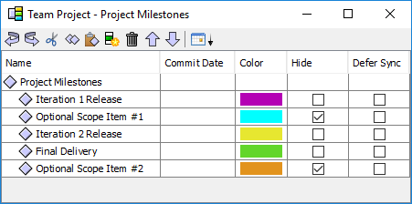

Then, you can choose "File → Open" in the WBS Editor window to open one of these alternative plans. (You can also open an alternative plan by dragging and dropping the ZIP file onto the Quick Launcher window.) A second WBS Editor window will open to show the data from the selected ZIP file. The name of the ZIP file will be displayed in the title bar of this window to distinguish it from your "official" project plan. You can edit this alternative plan, and the colored balancing bars will show the projected date when the alternative plan might finish. The "File → Save" option will write your changes back into the ZIP file.
After exploring alternative plans and presenting them to management, you may select a particular plan that the team intends to follow. In the Team Dashboard, select your team project from the tree on the left, and click the option from the list on the right to open the WBS for your project. Then choose "File → Replace Data." A warning dialog will be displayed. Read the warning information carefully and press the "Yes" button to confirm. Then select the ZIP file containing your team's chosen alternative plan. Your team's WBS, team member list, workflows, and milestones will be replaced with the data read from the ZIP file. Review the new data to make sure you selected the correct ZIP file, then choose "File → Save" to commit this as the official plan for your team project.
This technique leverages the power of milestones to explore scope changes. To use this technique, open the Milestones window. If you do not already have a milestone representing the actual project delivery, create one. In addition, create a new milestone for each deliverable that could potentially be moved in and out of scope. (Selecting the "Hide" checkbox for these optional deliverables may be helpful.)
Back in the WBS Editor, use the Milestone column on the Task Details tab to tag components and tasks that fall under the scope of each of these optional deliverables. Use the "Final Delivery" milestone as a catch-all to tag the components and tasks that must be completed, but that do not belong to any other milestone. One way to declare this "catch-all" is to set "Final Delivery" as the milestone for the first row in the WBS (the row that represents the overall team project).
Once milestones are assigned, click on the Milestones menu and select the option to "Balance Work Through" the "Final Delivery" milestone.
With these changes in place, you can now open the Milestones window and change the order of the "Optional Scope" milestones relative to "Final Delivery." (You can use the Move Up/Move Down operations on the toolbar to change the relative order of the milestones in the list.)
The image below demonstrates Optional Scope Item #1 being accomplished as part of the work for the "Iteration 2 Release," and the Optional Scope Item #2 being moved out of scope for the entire project.

As you reorder these milestones, the colored balancing bars will dynamically update to display new projections that take your scope changes into account.
When you present your alternative plans to management, they may agree to remove some of these optional items from the project scope. When you receive this direction, move the optional scope item to the end of the milestones list, and click the "Defer Sync" checkbox. This will tell the dashboard not to copy the related tasks into team members' personal plans.